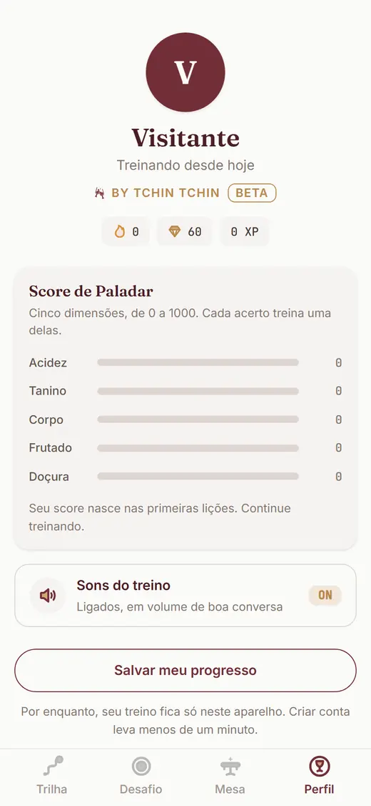
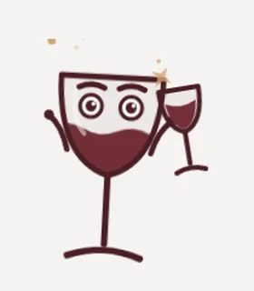
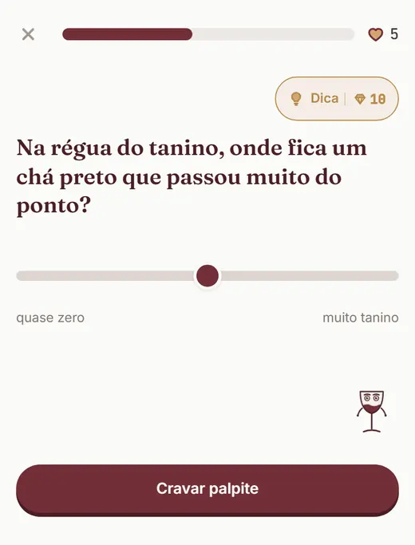
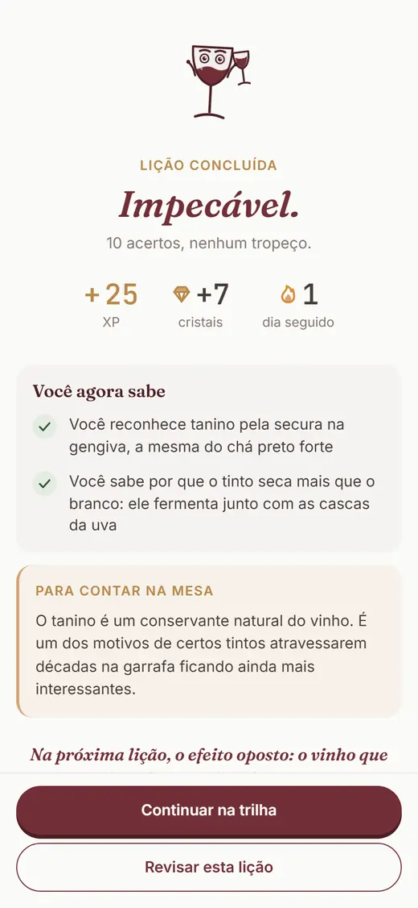

Para quem bebe há anos e quer sentir mais
Paladar não é dom. É treino.
Lições de 2 minutos treinam seu paladar em cinco dimensões: acidez, tanino, corpo, frutado e doçura. Grátis no beta.
Começar o treino Grátis no beta, sem cartão, direto no navegador do celular.

"Já bebo vinho há anos, mas só sinto presença do gosto de álcool. Não consigo separar os outros sabores."
Comentário real de quem aprende vinho na internet, anonimizado.
O gole que ainda não tem nome
Anos de garrafas abertas, e o tinto continua tendo gosto de tinto. Você lê "frutas vermelhas e notas de baunilha" no contrarrótulo, prova, e sente álcool. Em algum momento bate a suspeita: será que meu paladar simplesmente não dá para isso?
Dá. Sentir tanino, acidez e corpo é percepção, e percepção se treina, do mesmo jeito que ouvido se treina para música. Ninguém nasce reconhecendo uma uva pelo gole; quem reconhece hoje treinou, prova após prova, comparação após comparação. Como escreveu alguém que percorreu esse caminho: foi "treinando o olfato e o paladar, degustando" que o vinho abriu. Faltava método; talento você já tinha.
O Treine seu Paladar é esse método em forma de jogo. Igual academia: série (lições curtas, uma por dia), repetição (perguntas que voltam até a sensação virar reflexo) e descanso (2 minutos bastam, o exagero atrapalha). A cada acerto, seu Score de Paladar sobe na dimensão certa: acidez, tanino, corpo, frutado, doçura. Errou? O primeiro tropeço da lição não custa nada. Errar aqui faz parte do treino.
Revisão espaçada é a peça escondida do método: o treino traz cada ideia de volta um pouco antes de ela escapar da memória. É assim que idioma entra de vez. Gosto também.
Sejamos honestos sobre a promessa: ninguém vira sommelier em um mês, e não vamos fingir o contrário. O que o treino entrega é o caminho medido: no fim de cada lição, o recap "Você agora sabe" mostra o que mudou, e o Score registra a subida, dimensão por dimensão. Em poucas semanas, aquela secura na boca depois do gole de tinto ganha nome. E quando o gole tem nome, o vinho inteiro fica mais interessante.
Como funciona o treino
-
Série: uma lição de 2 minutos
Perguntas curtas sobre sensações que você já conhece: chá preto, manga madura, creme de leite.
-
Repetição: o que importa volta
A revisão espaçada devolve cada conceito na hora certa, até ele virar reflexo de paladar.
-
Medida: o Score sobe
Cinco dimensões, de 0 a 1000. Você vê a semana passada e a atual, lado a lado.
Prova honesta, em números do produto
Contamos só o que existe no app hoje. Sem estrela inventada, sem contagem de gente que não existe: estamos em beta, e o beta é grátis.
- 5
- dimensões de paladar medidas: acidez, tanino, corpo, frutado e doçura
- 30
- lições na trilha, com fatos verificados um a um
- 12 mil+
- vinhos catalogados; 10 mil e tantos alimentam o treino
- 2 min
- por lição. Treino bom é treino que cabe no dia
O treino, do jeito que ele aparece na sua tela


Seu próximo gole pode ter nome.
A primeira lição leva 2 minutos e já mexe com a forma como você sente o próximo vinho. O resto é treino, um dia de cada vez.
Começar o treino